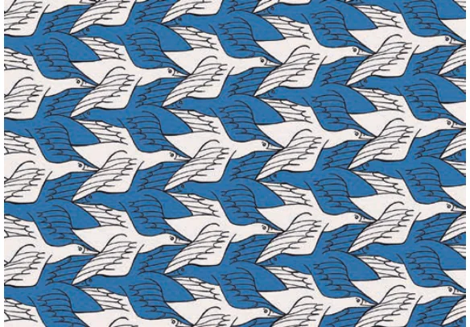
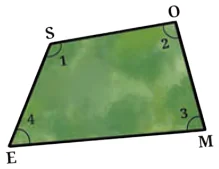
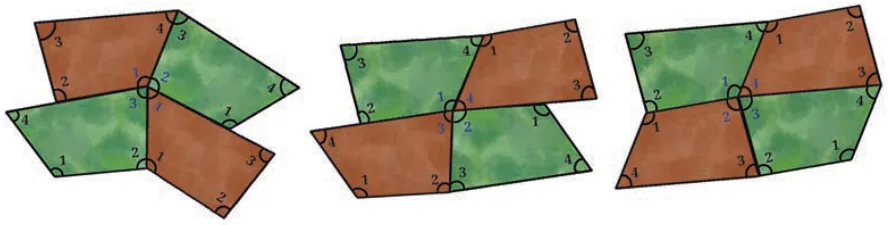
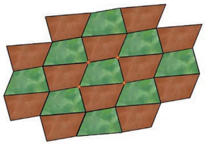
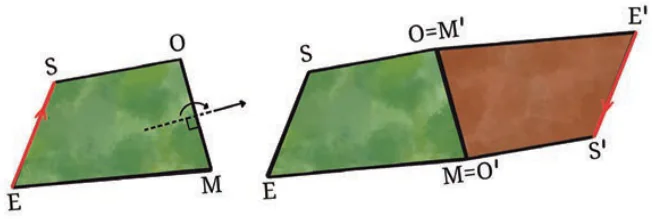
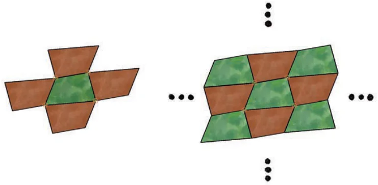
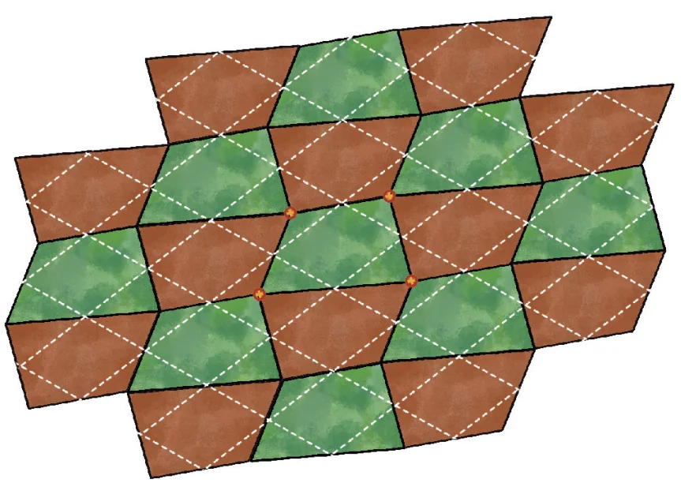
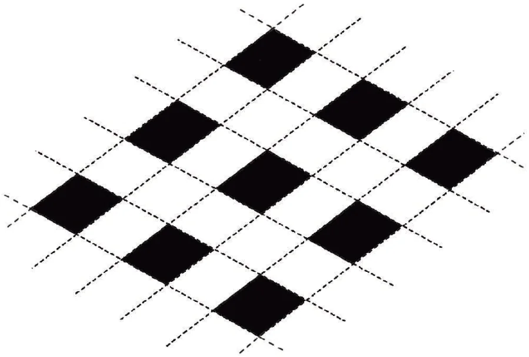

There are many ways to tile the plane, using a single shape or multiple shapes, leading to beautiful pictures. These occur in mosaics in several ancient civilizations to more recent artwork, such as that of M.C. Escher, in nature (for example, a honeycomb) and in decorative patterns we encounter in daily life.


We will see how the plane can be tiled with any given 4-gon, not just a parallelogram as we saw at the beginning of the chapter.
Before you see the answer in Fig. 12.28, see the hints below and try to find a tiling using the given irregular 4-gon SOME. First, trace SOME on paper with its four angles labelled 1, 2, 3, 4. Remember that they add up to \(360^\circ\). Cut out 15 identical copies.
Throughout this section, we will focus on experimental verification of our methods. However, you are encouraged to try to prove, on your own, that they work.
There are multiple ways of doing this, as shown in Fig. 12.27. Can you use any of these ways to continue fitting further copies of SOME to tile the plane? Try it with the 15 copies you made!

Here is how one can tile! Recreate it with your pieces.

How can we understand the figure? There seems to be a repeating pattern. (1) Can you precisely describe a procedure to draw the pattern so that someone can draw the tiling on their own, based only on your description? (2) Can you justify why your procedure works?
We will sketch two methods and ask you to complete the details.
Method 1: We start with two copies of SOME, one exactly above the other. Rotate the top copy by \(180^\circ\) around the midpoint of OM. The rotated copy aligns with the original copy perfectly along the shared edge OM.

Now repeat this procedure at each edge of every copy of SOME that you add. Verify that this will result in a tiling! Two steps of a possible continuation are shown in Fig. 12.30. The first step (Fig. 12.30 A) adds 4 copies around the starting copy and the second step (Fig. 12.30 B) adds 4 more copies. Note two interesting things about the second step: (1) each new copy can be obtained by rotating any one of its neighbours, and both ways give the same result. (2) The new copies fit perfectly. Can you explain these facts by reasoning? This is needed to prove that the method works!
Do you see which of the three possibilities shown in Fig. 12.27 occurs in the tiling?

Method 2. Before we explain Method 2, let us conduct a thought experiment. Remember the Varignon parallelogram for 4-gons (Theorem 9). Imagine that we have drawn this parallelogram in each copy of SOME in the tiling shown earlier in Fig. 12.28. Visualise what the picture looks like. Fig. 12.31 shows the result: It appears that the Varignon parallelograms form a grid, giving the same parallelogram tiling we saw in the introduction!
This suggests an idea. What if we start by drawing just the simple grid tiling made by the Varignon parallelogram of SOME? Can we use this grid to construct the new tiling by SOME?

A grid of Varignon parallelograms of SOME is given in Fig. 12.32. To begin with, focus only on the 9 green coloured copies of SOME in Fig. 12.31. We will first place only these 9 copies in Fig. 12.32. The corresponding parallelograms are shaded in Fig. 12.32. Place 9 copies of SOME so as to match the way the green coloured copies of SOME are placed in Fig. 12.31 (You were asked to give a precise description of how to do this in Exercise Set 12.3, Q5.) If done carefully, you will observe that each 4-gon you placed meets other placed copies exactly at vertices. Now see how 4 copies of SOME are made automatically in the gaps! Carefully place four more copies of SOME in these gaps. Continuing this process with more copies of SOME will give us the desired tiling.

It should be emphasised that our procedure needs to be justified to assure us that it will always work. We will not do this here, but invite you to try it on your own!